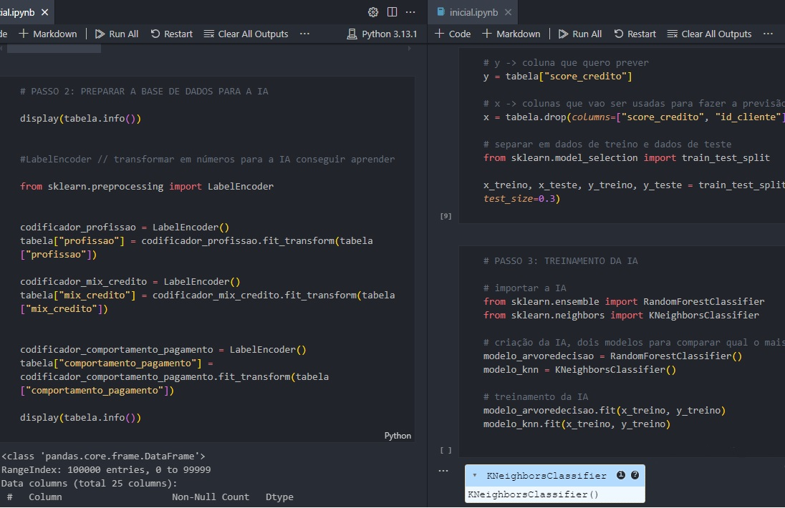
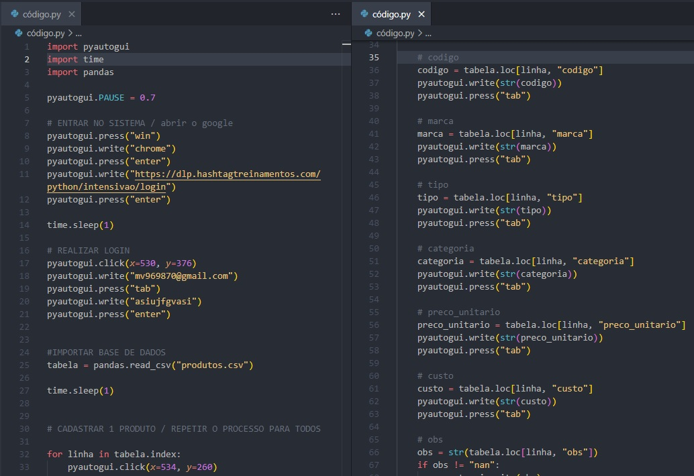

Desenvolvedor Full-Stack
Sou um estudante em busca da primeira oportunidade de emprego, desejo aplicar e expandir meus conhecimentos adquiridos na área de tecnologia e/ou administração. Procuro uma vaga que me permita desenvolver essas habilidades profissionais e almejo contribuir para o crescimento da empresa
Sobre
Eu sou uma pessoa muito focada no que quero, com isso eu me determino e vou atrás do meu objetivo. Sou apaixonado por esportes e por tudo que exige esforço e dedicação. Minha maior conquista será conseguir ajudar minha família com tudo que precisarem, trabalhando com o que estou praticando e estudando.
Tenho algumas experiências acadêmicas, no Ensino Médio me formei como Técnico em Administração em uma ETEC apresentando meu TCC para uma banca e apresentei vários projetos e seminários nos 3 anos que cursei, participando em todas as funções necessárias de criação e apresentação.
Na faculdade, eu participo de um grupo de alunos escolhidos pelas representantes da Secretaria do Meio Ambiente de Mogi das Cruzes para desenvolver um site com algumas necessidades que existiam e precisavam ser atendidas, esse projeto ainda está em desenvolvimento e o apresentamos frequentemente para nossos clientes. Nesse projeto tenho o papel de organizar as apresentações, apresentar aos clientes, criar protótipos, designar e gerenciar as tarefas, criar as documentações e criar os códigos.
Também participei do Encontro Cientifico Internacional da Braz Cubas, o ENCIBRAC, o qual apresentei um artigo científico, realizado em grupo, que comprova a segurança dos carros autônomos. Nesse projeto eu também participei em todas as funções de criação e apresentação.
Quero continuar sendo participativo e ganhar cada vez mais conhecimento com profissionais qualificados para me desenvolver e aplicá-los no que puder!
Projetos

Réplica do Spotify
Projeto Full-Stack de réplica da plataforma do Spotify, funcional e responsivo para todos os tipos de dispositivo.
Contém criação de API, conexão com banco de dados, criação de componentes e paginas, estilização, lógicas de play/pause, lógicas de front e back-end
Desenvolvido utilizando as tecnologias: React, Node.js, Express.js, HTML e CSS, MongoDB e Vite

Criação de IA
Projeto realizado a partir de um caso, que era desenvolver uma Inteligencia Artificial para analisar o score de um cliente automaticamente com base em dados anteriores.
Contém criação de IA, Machine Learning, tratamento e análise de dados.
Desenvolvido utilizando a tecnologia Python e suas bibliotecas

Automatização de Tarefas
Projeto que consiste em automatizar seu computador para adicionar os itens de uma base de dados sem precisar digitar um a um.
Contém criação da automação, conexão com a base de dados, consulta e uso dos dados.
Desenvolvido utilizando a tecnologia Python e suas bibliotecas (pyautogui, time e pandas).